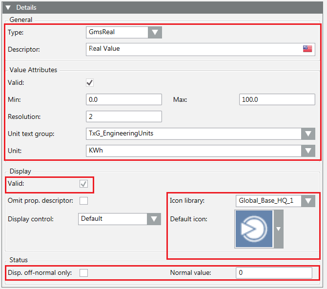

GmsReal Configuration
GmsReal Configuration Data | ||
Data | Use | Description |
GmsType | Optional | GMSREAL |
Attributes | Optional | Object containing the attributes of the property. For details, see Table GmsReal Attributes, below. The empty object (“Attributes”: { }) resets the attributes data. |
GmsReal Attributes | ||
Data | Use | Description |
Valid | Optional | Validity flag. If false, the display data is set but considered invalid. |
Properties | Optional | Object containing the valid range values and the resolution. For details, see Table GmsReal Properties, below. If the object is empty (“Properties”: { }), the values are reset: the range is |
UnitText | Optional | Object containing the engineering unit data. For details, in GmsInt Configuration see Table Engineering Unit. If the object is empty (“UnitText”: { }), the engineering unit is reset. |
GmsReal Properties | ||
Data | Use | Description |
Min | Optional | Min value. The value must be expressed according to the CultureInfo.InvariantCulture. |
Max | Optional | Max value. The value must be expressed according to the CultureInfo.InvariantCulture. |
Res | Optional | Resolution. The max value for the resolution is 16. |
Example
{
"Name": "Float_Value",
"PvssType": { "PvssType": "FLOAT" },
"VL": true,
"AL": true,
"Persist": true,
"GroupId": "CONFIG",
"Description": [ { "Culture": "en-US", "Text": "Real Value" } ],
"Display": {
"Valid": true,
"Icon": {
"Library": "Global_Base_HQ_1",
"Name": "Op_DP_Generic_None_001.png"
}
},
"GmsType": {
"GmsType": "GMSREAL",
"Attributes”: {
"Valid”: true,
"UnitText": {
"Unit": "KWh",
"TextGroup": "TxG_EngineeringUnits"
},
"Properties": {
"Min": 0.00,
"Max": 100.00,
"Res": 2
}
}
}
}
The following image shows the corresponding fields in the Models & Functions tab:
